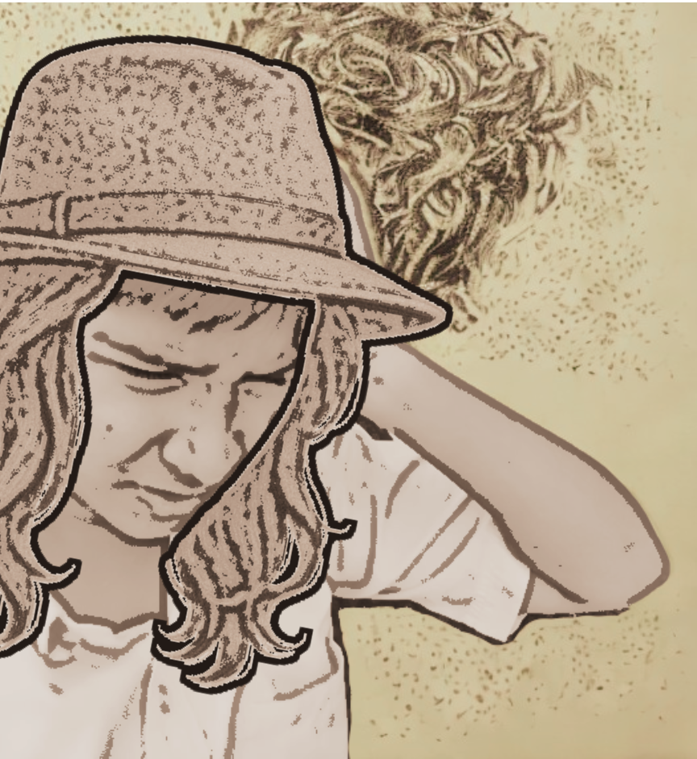

"TIGER HUNT EXPOSED: Goat got shot!"
Published on April 21st, 2025
A scandal has erupted in London and Jaipur alike after revelations that Mrs. Patricia Packletide’s famed “tiger hunt” was, in fact, a bungled goat assassination. Sources confirm that the “notorious man-eater” reportedly slain by Mrs. Packletide last month succumbed not to her rifle, but to a heart attack—while her bullet struck a luckless goat tethered nearby.
The expose follows last week’s The Daily Mail article lauding Mrs. Packletide as the “bravest woman of the season.” Villagers now admit the “hunt” was staged to secure her generous payment. “The tiger was old and napping. The goat died instantly,” confessed a local guide, sparking outrage.
Miss Mebbin, Mrs. Packletide’s companion, fueled rumors by gifting Loona Bimberton a goat-hair scarf with the note: “From Pakletide’s greatest conquest.” Mrs. Packletide denies the claims, insisting, “The tiger-skin rug speaks for itself!”
The scandal has upended her luncheon plans, with guests now demanding “goat curry” on the menu.